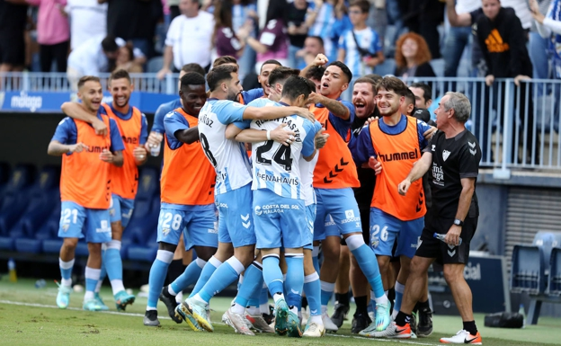

Mel no consigue botín con su 'revolución' 19 titulares y 16 cambios para un solo punto  Pepe Mel ha intentado revolucionar sin éxito su Málaga en las últimas semanas. El entrenador malaguista ha probado todo lo que se podía probar en estas tres jornadas que se han disputado en estos siete días en la categoría de plata. Un total de 19 titulares en tres partidos y nada más y nada menos que 16 cambios en tres jornadas. Una auténtica revolución que ha dejado solo un punto de bagaje. La lista completa de los que han jugado de inicio en los tres últimos compromisos es: Manolo Reina y Rubén Yáñez (dos porteros); Javi Jiménez, Escassi, Esteban Burgos, Juanfran Moreno, Juande, Ramalho y Bustinza (siete defensas); Ramón, N'Diaye, Febas y Fran Villalba (cuatro centrocampistas); y Álex Gallar, Cristian, Hervías, Rubén Castro, Chavarría y Loren (seis delanteros). El propio entrenador desvelaba su plan en sala de prensa. "No vamos a hacer nada extraño. Hay suficiente plantilla para usarla. Hay gente que va a jugar y que no lo hizo el otro día. Es momento de dar oportunidades a la gente", decía el entrenador antes de comenzar la ruta de tres partidos en una semana, correspondientes a las jornadas 13ª, 14ª y 15ª en LaLiga SmartBank. En la Jornada 13ª, el once fue : Reina; Javi Jiménez, Escassi, Esteban Burgos, Juanfran; Ramón, N'Diaye; Álex Gallar, Fran Villalba, Pablo Hervías; Rubén Castro. Fue el último partido de Manolo Reina y los últimos como titulares de Javi Jiménez y Juanfran juntos.Hubo cuatro cambios con respecto a Oviedo. Entraron Ramón, Fran Villalba, Álex Gallar y Pablo Hervías. Así fue el agónico empate ante el Sporting... Contra el Cartagena salieron de inicio: Yáñez; Javi Jiménez, Juande, Esteban Burgos, Ramalho; Febas, N'Diaye, Luis Muñoz; Lumor, Rubén Castro, Pablo Chavarría. En ese partido, Pepe Mel introdujo nada más y nada menos que siete cambios con respecto al choque del Eibar. Entraron Yáñez, Juande, Febas, Ramalho, Luis, Lumor y Chavarría. Y la última ha sido este fin de semana pasado, contra el Sporting: Yáñez; Unai Bustinza, Juande, Escassi, Ramalho; Cristian, Luis Muñoz, N'Diaye, Hervías; Loren Zúñiga, Rubén Castro. Cinco cambios con respecto a Cartagena. Se colaron Unai Bustinza y Loren y volvieron Alberto Escassi, Cristian y Pablo Hervías.